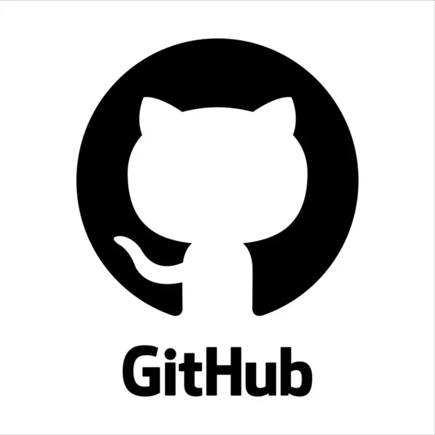

À propos
Administratrice Systèmes et Réseaux avec 5 ans d'expérience dans la gestion d'infrastructures IT complexes. Spécialisée dans l'administration de serveurs Windows/Linux, la virtualisation VMware et la sécurité réseau.
Actuellement en formation Expert Cloud DevOps pour élargir mes compétences vers le cloud et l'automatisation. Reconnue pour ma capacité à résoudre efficacement les incidents et à optimiser les performances système.
Centres d'intérêt
Escalade
Je retrouve dans l’escalade, en bloc comme en voie, les mêmes défis que dans mon métier : analyser, résoudre et progresser pas à pas, jusqu’au sommet. Cette discipline cultive la concentration, la gestion du stress et la résolution de problèmes, chaque itinéraire étant un défi technique unique à décoder et à franchir.
Voyages
Voyager développe l’adaptabilité et la capacité à gérer l’imprévu, des qualités essentielles en DevOps. L’exposition à de nouvelles cultures et méthodes de travail stimule la créativité, enrichit les pratiques professionnelles et favorise la communication interculturelle.
Gastronomie
Passionnée de gastronomie et de découverte de nouveaux restaurants, j’aime explorer et analyser différentes expériences — un esprit curieux et observateur qui se retrouve dans ma manière d’aborder les technologies et les solutions DevOps.
Expérience Professionnelle
Administratrice Systèmes et Réseaux
- Gestion d'infrastructure critique : Administration de serveurs Windows Server dans un environnement de production 24/7, 7 jours sur 7.
- Optimisation des performances : Mise en place de solutions de monitoring proactif réduisant les temps d'arrêt
- Sécurité réseau : Configuration et maintenance d'équipements réseau sécurisés (firewalls, switches, routeurs)
- Support technique expert : Résolution d'incidents N1, N2 et N3
Administratrice Systèmes et Réseaux
- Administration serveurs Windows : Gestion de 200+ serveurs Windows Server 2016/2019 en environnement critique de santé
- Virtualisation VMware : Déploiement et maintenance d'environnements virtualisés sur vSphere ESXi
- Gestion incidents critiques : Traitement prioritaire des tickets N1, N2 et N3 dans un contexte médical sensible pour 1300+ collaborateurs en Ile-De-France et +10.000 collaborateurs en France.
- Sauvegardes médicales : Administration des systèmes de sauvegarde Veeam et Arcserve pour les données sensibles
Apprentie Administratrice Systèmes et Réseaux
- Projet de refonte infrastructure : Participation à la migration complète du système d'information
- Support utilisateurs : Gestion du support N1 et N2 pour 150+ utilisateurs
- Déploiement postes : Installation et configuration de 50+ postes de travail Windows 10
Compétences Techniques


üñ•Ô∏è Syst√®mes d'Exploitation
üåê R√©seaux & S√©curit√©
☁️ Virtualisation & Cloud
üîß Scripting & Outils
Formation
Formation Expert Cloud DevOps
Formation intensive cloud et automatisation
Licence Professionnelle SRSI - Systèmes, Réseaux et Sécurité Informatique
Projet : Création infrastructure complète avec firewall, AD, GPO, serveur de fichiers, redondance et formation Stormshield
Me Contacter
 GitHub
 LinkedIn
LinkedIn
üìÑ Mon Curriculum Vitae
üìç Localisation
Île-de-France, France
üöó Permis B